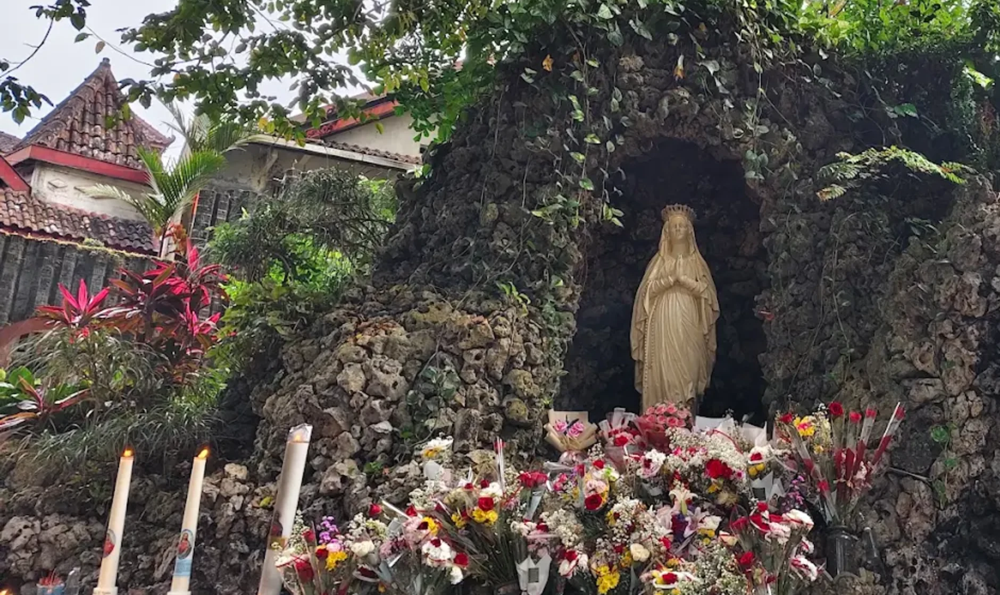

PEZIARAH.COM · KELAS + ROAD TRIP
3 hari.
6 titik ziarah.
8 creator.
Road trip foto & video menyusuri rute 04–09 di peta ziarah kami.
AMBARAWA
MUNTILAN
SENDANGSONO
KLATEN
BANTUL
GUNUNGKIDUL
[TANGGAL] · PENDAFTARAN DITUTUP [TANGGAL]
02 — RUTENYA
3 HARI 2 MALAM
Enam titik yang sudah kami tempuh sendiri.
HARI 01
Kerep Ambarawa 06 → Kerkhof Muntilan 05
Patung Assumpta 42 meter pagi hari, makam Romo Sanjaya sore. Menginap di Yogya.
HARI 02
Sendangsono 04 → Candi Ganjuran 08
Mata air di bawah dua pohon sono sebelum rombongan datang; candi Jawa 1930 saat golden hour.
HARI 03
Sendang Sriningsih 07 → Gua Maria Tritis 09
Subuh di jalan salib Prambanan, lalu gua karst asli waktu cahaya masuk paling tajam.
Jam-jamnya bukan tebakan. Kami operator ziarah — rute ini kami jalankan tiap minggu.
03 — YANG DIPELAJARI
BUKAN CUMA JALAN-JALAN
Memotret tempat suci tanpa mengganggu yang berdoa.
01
Membaca cahaya di ruang ibadat — jendela, lilin, mulut gua karst.
02
Etika merekam devosi: kapan boleh dekat, kapan harus turunkan kamera.
03
Ambient reels: merekam suara tempat, ritme potong, dan menjaga hening.
04
Menulis caption yang menceritakan tempat, bukan mengubah devosi jadi iklan.
DIAMPU OLEH
[NAMA PENGAJAR]
[satu baris kredibilitas — mis. fotografer dokumenter, 12 tahun meliput ziarah di Jawa]

04 — TIMBAL BALIK
JUJUR DUA ARAH
KAMU DAPAT
Van 14 kursi, PP dari Yogya
Penginapan 2 malam
Makan sepanjang trip
Pendampingan & review karya
Izin lokasi kami yang urus
KAMI MINTA
10 foto pilihan
1 reel per titik favoritmu
Izin tayang di peziarah.com
Hak cipta tetap punyamu
Kredit selalu dicantumkan
KONTRIBUSI PESERTA
[Rp ——]
[sisanya kami tanggung / gratis untuk 8 terpilih — pilih satu dan hapus yang lain]
05 — CARA DAFTAR
8 kursi. Tutup [TANGGAL].
01
Isi form di peziarah.com/roadtrip
02
Lampirkan 5 karya terbaikmu — link IG cukup
03
Kabar seleksi [TANGGAL], lewat DM
Nggak harus punya kamera mahal. Kami cari mata yang sabar, bukan gear.
PEZIARAH
OPERATOR ZIARAH · EST. 2026
CAPTION — SIAP SALIN
Tiap minggu kami antar orang ke Sendangsono, Ganjuran, Tritis. Yang selalu kami sayangkan: tempat-tempat ini jarang terdokumentasi dengan tenang. Rombongan datang, foto rame-rame, pulang.
Jadi kami buka satu trip yang bukan untuk mengantar peziarah — tapi untuk merekamnya.
3 hari, 6 titik ziarah di Jawa Tengah & DIY, 8 creator Katolik. Rute 04–09 di peta kami: Kerep Ambarawa, Kerkhof Muntilan, Sendangsono, Candi Ganjuran, Sendang Sriningsih, Gua Maria Tritis.
Kamu dapat transport, penginapan, makan, dan pendampingan tiga hari penuh. Kami minta 10 foto dan 1 reel — boleh tayang di peziarah.com dengan kredit, hak cipta tetap punyamu.
Nggak harus punya kamera mahal. Kami cari mata yang sabar.
Cara daftar ada di slide terakhir. 8 kursi, ditutup [TANGGAL].
#ZiarahKatolik #GuaMaria #Sendangsono #CandiGanjuran #OMKIndonesia #CreatorKatolik #FotografiDokumenter #WisataRohani #KatolikIndonesia #Peziarah